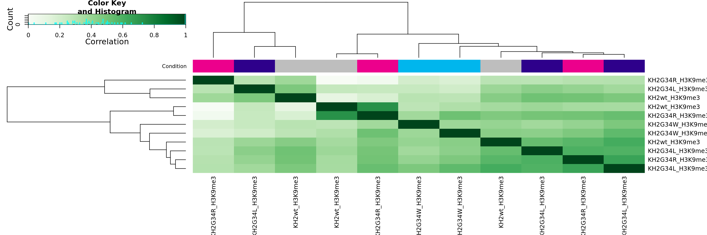
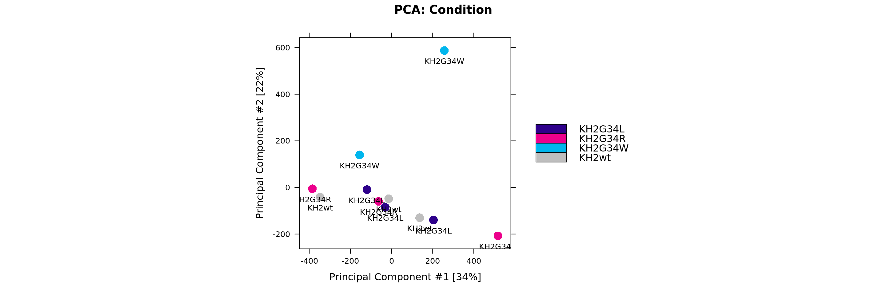
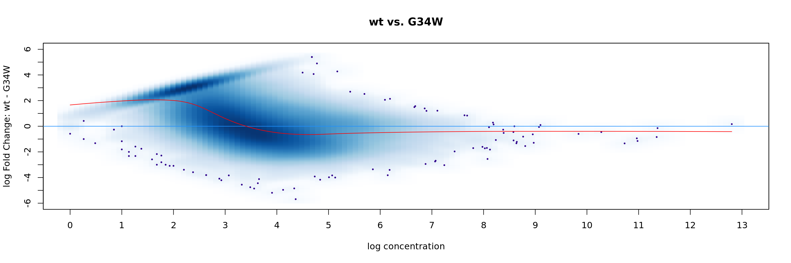

Last updated: 2021-10-25
Checks: 7 0
Knit directory: Mouse_ACT_Seq/
This reproducible R Markdown analysis was created with workflowr (version 1.6.2). The Checks tab describes the reproducibility checks that were applied when the results were created. The Past versions tab lists the development history.
Great! Since the R Markdown file has been committed to the Git repository, you know the exact version of the code that produced these results.
Great job! The global environment was empty. Objects defined in the global environment can affect the analysis in your R Markdown file in unknown ways. For reproduciblity it’s best to always run the code in an empty environment.
The command set.seed(20210715) was run prior to running the code in the R Markdown file. Setting a seed ensures that any results that rely on randomness, e.g. subsampling or permutations, are reproducible.
Great job! Recording the operating system, R version, and package versions is critical for reproducibility.
Nice! There were no cached chunks for this analysis, so you can be confident that you successfully produced the results during this run.
Great job! Using relative paths to the files within your workflowr project makes it easier to run your code on other machines.
Great! You are using Git for version control. Tracking code development and connecting the code version to the results is critical for reproducibility.
The results in this page were generated with repository version 8bd8dd3. See the Past versions tab to see a history of the changes made to the R Markdown and HTML files.
Note that you need to be careful to ensure that all relevant files for the analysis have been committed to Git prior to generating the results (you can use wflow_publish or wflow_git_commit). workflowr only checks the R Markdown file, but you know if there are other scripts or data files that it depends on. Below is the status of the Git repository when the results were generated:
Ignored files:
Ignored: .RData
Untracked files:
Untracked: Rnbeads_Best_practice_10_21_files/
Untracked: Rplots.pdf
Untracked: Untitled/
Untracked: analysis/ACT_Seq_K9_broadpeaks.Rmd
Untracked: analysis/newpipeline.Rmd
Untracked: clustering_all_marks.Rmd
Untracked: code/bigwigs.sh
Untracked: code/bigwigs_RPKM.sh
Untracked: code/matrix_RPKM.sh
Untracked: code/matrixgeneration.sh
Untracked: data/chmm_mESC.rds
Untracked: data/chmm_segments_mm10.rds
Untracked: figure/
Untracked: matrixcalc.sh
Untracked: output/datasummedH3K27ac.rds
Untracked: output/datasummedH3K27me3.rds
Untracked: output/datasummedH3K36me3.rds
Untracked: output/datasummedH3K9me3.rds
Untracked: output/datasummed_none.rds
Untracked: output/datasummed_norm_BPM.rds
Untracked: output/datasummed_norm_CPM.rds
Untracked: output/datasummed_norm_MACS2.rds
Untracked: output/datasummed_norm_RPGC.rds
Untracked: output/datasummed_norm_RPKM.rds
Untracked: output/datasummed_norm_cwlab.rds
Untracked: output/datasummed_normcomp.rds
Untracked: output/sum_full_data.Rds
Untracked: output/sum_full_data_predelta.Rds
Untracked: peakfiles.csv
Unstaged changes:
Deleted: analysis/methylation_domain_analysis.Rmd
Modified: analysis/normalization_comparison.Rmd
Note that any generated files, e.g. HTML, png, CSS, etc., are not included in this status report because it is ok for generated content to have uncommitted changes.
These are the previous versions of the repository in which changes were made to the R Markdown (analysis/Diffbind_K9me3.Rmd) and HTML (docs/Diffbind_K9me3.html) files. If you’ve configured a remote Git repository (see ?wflow_git_remote), click on the hyperlinks in the table below to view the files as they were in that past version.
| File | Version | Author | Date | Message |
|---|---|---|---|---|
| Rmd | 8bd8dd3 | margan96 | 2021-10-25 | initial publish |
##edit name depending on what you want to compute!
NAME <- "ACT_seq_K9me3"
EXT <- "_dba_results.rds"
path <- paste("/icgc/dkfzlsdf/analysis/C010/ganslm/", NAME, EXT)
# create sample sheet
BAM_DIR = c("/icgc/dkfzlsdf/analysis/C010/cwlab_processing_out2/canepi-srv1/20210309_120_H33_Ilse20790/runs_out",
"/icgc/dkfzlsdf/analysis/C010/cwlab_processing_out2/canepi-srv1/20201225_629_HistMut_20245/runs_out",
"/icgc/dkfzlsdf/analysis/C010/cwlab_processing_out2/canepi-srv1/20210311_219_H33_Ilse20866/runs_out",
"/icgc/dkfzlsdf/analysis/C010/cwlab_processing_out2/canepi-srv1/20201225_122_HistMut_20247/runs_out",
"/icgc/dkfzlsdf/analysis/C010/cwlab_processing_out2/canepi-srv1/20201225_032_HistMut_20244/runs_out",
"/icgc/dkfzlsdf/analysis/C010/cwlab_processing_out2/canepi-srv1/20210316_239_H33_Ilse20926/runs_out",
"/icgc/dkfzlsdf/analysis/C010/cwlab_processing_out2/canepi-srv1/20201225_988_HistMut_20246/runs_out",
"/icgc/dkfzlsdf/analysis/C010/cwlab_processing_out2/canepi-srv1/20201225_548_HistMut_20250/runs_out",
"/omics/groups/OE0219/internal/ganslm/Analysis/Mouse_ActSeq/ACTseq/cwlab_outputs/20200621_532_ACT-seq_ESC_histone_3_2/runs_out",
"/omics/groups/OE0219/internal/ganslm/Analysis/Mouse_ActSeq/ACTseq/cwlab_outputs/20200610_204_ACT-seq_ESC_histone3/")
PEAK_DIR <- c("/omics/groups/OE0219/internal/ganslm/Analysis/Mouse_ActSeq/New/20201225_032_HistMut_20244",
"/omics/groups/OE0219/internal/ganslm/Analysis/Mouse_ActSeq/New/20201225_122_HistMut_20247",
"/omics/groups/OE0219/internal/ganslm/Analysis/Mouse_ActSeq/New/20201225_548_HistMut_20250",
"/omics/groups/OE0219/internal/ganslm/Analysis/Mouse_ActSeq/New/20201225_629_HistMut_20245",
"/omics/groups/OE0219/internal/ganslm/Analysis/Mouse_ActSeq/New/20201225_988_HistMut_20246",
"/omics/groups/OE0219/internal/ganslm/Analysis/Mouse_ActSeq/New/20210309_120_H33_Ilse20790",
"/omics/groups/OE0219/internal/ganslm/Analysis/Mouse_ActSeq/New/20210311_219_H33_Ilse20866",
"/omics/groups/OE0219/internal/ganslm/Analysis/Mouse_ActSeq/New/20210316_239_H33_Ilse20926")
#for H3K9me3
bamReads <- list.files(path = BAM_DIR, pattern = glob2rx("*tn5correct.bam"),
recursive = T,
full.names = TRUE)
bamReads <- bamReads[grep("H3K9me3", bamReads)]
Peaks <- list.files(path = PEAK_DIR,
pattern = glob2rx("*_peaks.xls"),
recursive = T,
full.names = TRUE)
Peaks <- Peaks[grep("H3K9me3", Peaks)]
SampleID <- sapply(strsplit(split="/",bamReads), "[", 10)
Condition <- sapply(strsplit(split="_", SampleID), "[", 1)
Sequencingrun <- sapply(strsplit(split="/",bamReads), "[", 8)
samples_K9 <- data.frame(SampleID, Tissue = "Cell_line", Factor = "H3K9me3", Condition, bamReads, Peaks, Sequencingrun, "PeakCaller" = "macs")
samples_K9 SampleID Tissue Factor Condition
1 KH2G34L_H3K9me3 Cell_line H3K9me3 KH2G34L
2 KH2G34R_H3K9me3 Cell_line H3K9me3 KH2G34R
3 KH2G34W_H3K9me3 Cell_line H3K9me3 KH2G34W
4 KH2wt_H3K9me3 Cell_line H3K9me3 KH2wt
5 KH2G34L_H3K9me3 Cell_line H3K9me3 KH2G34L
6 KH2G34R_H3K9me3 Cell_line H3K9me3 KH2G34R
7 KH2wt_H3K9me3 Cell_line H3K9me3 KH2wt
8 KH2G34L_H3K9me3 Cell_line H3K9me3 KH2G34L
9 KH2G34R_H3K9me3 Cell_line H3K9me3 KH2G34R
10 KH2G34W_H3K9me3 Cell_line H3K9me3 KH2G34W
11 KH2wt_H3K9me3 Cell_line H3K9me3 KH2wt
bamReads
1 /icgc/dkfzlsdf/analysis/C010/cwlab_processing_out2/canepi-srv1/20201225_548_HistMut_20250/runs_out/KH2G34L_H3K9me3/KH2G34L_H3K9me3_filt_tn5correct.bam
2 /icgc/dkfzlsdf/analysis/C010/cwlab_processing_out2/canepi-srv1/20201225_548_HistMut_20250/runs_out/KH2G34R_H3K9me3/KH2G34R_H3K9me3_filt_tn5correct.bam
3 /icgc/dkfzlsdf/analysis/C010/cwlab_processing_out2/canepi-srv1/20201225_548_HistMut_20250/runs_out/KH2G34W_H3K9me3/KH2G34W_H3K9me3_filt_tn5correct.bam
4 /icgc/dkfzlsdf/analysis/C010/cwlab_processing_out2/canepi-srv1/20201225_548_HistMut_20250/runs_out/KH2wt_H3K9me3/KH2wt_H3K9me3_filt_tn5correct.bam
5 /icgc/dkfzlsdf/analysis/C010/cwlab_processing_out2/canepi-srv1/20201225_629_HistMut_20245/runs_out/KH2G34L_H3K9me3/KH2G34L_H3K9me3_filt_tn5correct.bam
6 /icgc/dkfzlsdf/analysis/C010/cwlab_processing_out2/canepi-srv1/20201225_629_HistMut_20245/runs_out/KH2G34R_H3K9me3/KH2G34R_H3K9me3_filt_tn5correct.bam
7 /icgc/dkfzlsdf/analysis/C010/cwlab_processing_out2/canepi-srv1/20201225_629_HistMut_20245/runs_out/KH2wt_H3K9me3/KH2wt_H3K9me3_filt_tn5correct.bam
8 /icgc/dkfzlsdf/analysis/C010/cwlab_processing_out2/canepi-srv1/20210309_120_H33_Ilse20790/runs_out/KH2G34L_H3K9me3/KH2G34L_H3K9me3_filt_tn5correct.bam
9 /icgc/dkfzlsdf/analysis/C010/cwlab_processing_out2/canepi-srv1/20210309_120_H33_Ilse20790/runs_out/KH2G34R_H3K9me3/KH2G34R_H3K9me3_filt_tn5correct.bam
10 /icgc/dkfzlsdf/analysis/C010/cwlab_processing_out2/canepi-srv1/20210309_120_H33_Ilse20790/runs_out/KH2G34W_H3K9me3/KH2G34W_H3K9me3_filt_tn5correct.bam
11 /icgc/dkfzlsdf/analysis/C010/cwlab_processing_out2/canepi-srv1/20210309_120_H33_Ilse20790/runs_out/KH2wt_H3K9me3/KH2wt_H3K9me3_filt_tn5correct.bam
Peaks
1 /omics/groups/OE0219/internal/ganslm/Analysis/Mouse_ActSeq/New/20201225_548_HistMut_20250/KH2G34L_H3K9me3_filt_tn5correct_peaks.xls
2 /omics/groups/OE0219/internal/ganslm/Analysis/Mouse_ActSeq/New/20201225_548_HistMut_20250/KH2G34R_H3K9me3_filt_tn5correct_peaks.xls
3 /omics/groups/OE0219/internal/ganslm/Analysis/Mouse_ActSeq/New/20201225_548_HistMut_20250/KH2G34W_H3K9me3_filt_tn5correct_peaks.xls
4 /omics/groups/OE0219/internal/ganslm/Analysis/Mouse_ActSeq/New/20201225_548_HistMut_20250/KH2wt_H3K9me3_filt_tn5correct_peaks.xls
5 /omics/groups/OE0219/internal/ganslm/Analysis/Mouse_ActSeq/New/20201225_629_HistMut_20245/KH2G34L_H3K9me3_filt_tn5correct_peaks.xls
6 /omics/groups/OE0219/internal/ganslm/Analysis/Mouse_ActSeq/New/20201225_629_HistMut_20245/KH2G34R_H3K9me3_filt_tn5correct_peaks.xls
7 /omics/groups/OE0219/internal/ganslm/Analysis/Mouse_ActSeq/New/20201225_629_HistMut_20245/KH2wt_H3K9me3_filt_tn5correct_peaks.xls
8 /omics/groups/OE0219/internal/ganslm/Analysis/Mouse_ActSeq/New/20210309_120_H33_Ilse20790/KH2G34L_H3K9me3_filt_tn5correct_peaks.xls
9 /omics/groups/OE0219/internal/ganslm/Analysis/Mouse_ActSeq/New/20210309_120_H33_Ilse20790/KH2G34R_H3K9me3_filt_tn5correct_peaks.xls
10 /omics/groups/OE0219/internal/ganslm/Analysis/Mouse_ActSeq/New/20210309_120_H33_Ilse20790/KH2G34W_H3K9me3_filt_tn5correct_peaks.xls
11 /omics/groups/OE0219/internal/ganslm/Analysis/Mouse_ActSeq/New/20210309_120_H33_Ilse20790/KH2wt_H3K9me3_filt_tn5correct_peaks.xls
Sequencingrun PeakCaller
1 20201225_548_HistMut_20250 macs
2 20201225_548_HistMut_20250 macs
3 20201225_548_HistMut_20250 macs
4 20201225_548_HistMut_20250 macs
5 20201225_629_HistMut_20245 macs
6 20201225_629_HistMut_20245 macs
7 20201225_629_HistMut_20245 macs
8 20210309_120_H33_Ilse20790 macs
9 20210309_120_H33_Ilse20790 macs
10 20210309_120_H33_Ilse20790 macs
11 20210309_120_H33_Ilse20790 macspeaks <- dba(sampleSheet = samples_K9)
peaks <- dba.blacklist(peaks, blacklist = DBA_BLACKLIST_HG19, greylist=FALSE)
peaks <- dba.count(peaks)
peaks11 Samples, 131698 sites in matrix:
ID Tissue Factor Condition Reads FRiP
1 KH2G34L_H3K9me3 Cell_line H3K9me3 KH2G34L 8807181 0.14
2 KH2G34R_H3K9me3 Cell_line H3K9me3 KH2G34R 9879046 0.26
3 KH2G34W_H3K9me3 Cell_line H3K9me3 KH2G34W 11120888 0.22
4 KH2wt_H3K9me3 Cell_line H3K9me3 KH2wt 8214506 0.14
5 KH2G34L_H3K9me3 Cell_line H3K9me3 KH2G34L 13816092 0.19
6 KH2G34R_H3K9me3 Cell_line H3K9me3 KH2G34R 8779759 0.15
7 KH2wt_H3K9me3 Cell_line H3K9me3 KH2wt 15837093 0.10
8 KH2G34L_H3K9me3 Cell_line H3K9me3 KH2G34L 13210888 0.08
9 KH2G34R_H3K9me3 Cell_line H3K9me3 KH2G34R 7615363 0.09
10 KH2G34W_H3K9me3 Cell_line H3K9me3 KH2G34W 9254629 0.19
11 KH2wt_H3K9me3 Cell_line H3K9me3 KH2wt 10927494 0.24plot(peaks)
peaks <- dba.normalize(peaks)## PCA
dba.plotPCA(peaks, label= DBA_CONDITION)
## MA
dba.plotMA(peaks, bNormalized=FALSE,
contrast=list(wt=peaks$masks$KH2wt,
G34W=peaks$masks$KH2G34W))
#this models the data and sets wt as "base"
contrast <- dba.contrast(peaks, reorderMeta=list(Condition="KH2wt"))
#differential analyis with standard FDR of <0.05
diffbind <- dba.analyze(contrast)
dba.show(diffbind, bContrasts = T) Factor Group Samples Group2 Samples2 DB.DESeq2
1 Condition KH2G34L 3 KH2G34R 3 0
2 Condition KH2G34L 3 KH2wt 3 0
3 Condition KH2G34R 3 KH2wt 3 0plot(diffbind, contrast = 1)Error: Unable to plot -- no sites within thresholddb_sites <- dba.report(diffbind)
#saveRDS(db_sites, file = "/icgc/dkfzlsdf/analysis/C010/ganslm/workflowr/ACT_Seq2/output/db_sites.rds")
#db_sites <- readRDS("/icgc/dkfzlsdf/analysis/C010/ganslm/workflowr/ACT_Seq2/output/db_sites.rds")
#plots them as Venn
## Venn
dba.plotVenn(diffbind, contrast=1, bDB=TRUE, bGain=TRUE, bLoss=TRUE, bAll=FALSE)Error: No valid contrasts/methods specified.gain <- db_sites[db_sites$Fold > 0]
loss <- db_sites[db_sites$Fold < 0]
# Create GRanges object with annotations from TxDb database
annoData <- toGRanges(TxDb.Hsapiens.UCSC.hg19.knownGene, feature="gene")
# Load mart
ensembl <- useEnsembl(biomart = "genes",
dataset = "hsapiens_gene_ensembl")First look at the peaks that were gained
genomicElementDistribution(gain,
TxDb = TxDb.Hsapiens.UCSC.hg19.knownGene,
promoterRegion=c(upstream=2000, downstream=500),
geneDownstream=c(upstream=0, downstream=2000),
promoterLevel=list(
# from 5' -> 3', fixed precedence 3' -> 5'
breaks = c(-2000, -1000, -500, 0, 500),
labels = c("upstream 1-2Kb", "upstream 0.5-1Kb",
"upstream <500b", "TSS - 500b"),
colors = c("#FFE5CC", "#FFCA99",
"#FFAD65", "#FF8E32")))Error in genomicElementDistribution(gain, TxDb = TxDb.Hsapiens.UCSC.hg19.knownGene, : peaks must be an object of GRanges or GRangesList# Annotate granges with the nearest TSS
annot <- annotatePeakInBatch(gain,
AnnotationData=annoData,
featureType = "TSS",
output="nearestLocation",
PeakLocForDistance = "start")Error in annotatePeakInBatch(gain, AnnotationData = annoData, featureType = "TSS", : No valid myPeakList passed in. It needs to be GRanges objectannot <- addGeneIDs(annot, mart = ensembl, feature_id_type = "ensembl_gene_id",
IDs2Add = c("entrezgene_id", "description"))Error in is(annotatedPeak, "GRanges"): object 'annot' not foundannot.copy <- annotError in eval(expr, envir, enclos): object 'annot' not foundannot.copy$score <- 1Error in annot.copy$score <- 1: object 'annot.copy' not foundbinOverFeature(annot, annot.copy, annotationData=annoData,
radius=5000, nbins=10, FUN=c(sum, length),
ylab=c("score", "count"),
main=c("Distribution of aggregated peak scores around TSS",
"Distribution of aggregated peak numbers around TSS"))Error in binOverFeature(annot, annot.copy, annotationData = annoData, : object 'annot' not foundif(require(TxDb.Hsapiens.UCSC.hg19.knownGene)){
aCR<-assignChromosomeRegion(annot, nucleotideLevel=FALSE,
precedence=c("Promoters", "immediateDownstream",
"fiveUTRs", "threeUTRs",
"Exons", "Introns"),
TxDb=TxDb.Hsapiens.UCSC.hg19.knownGene)
barplot(aCR$percentage)
}Error in assignChromosomeRegion(annot, nucleotideLevel = FALSE, precedence = c("Promoters", : object 'annot' not foundpie1(table(annot$insideFeature))Error in eval(quote(list(...)), env): object 'annot' not foundover <- getEnrichedGO(annot, orgAnn="org.Hs.eg.db", condense=TRUE, feature_id_type ="entrez_id")Error in is(annotatedPeak, "GRangesList"): object 'annot' not foundenrichmentPlot(over)Error in is.data.frame(res): object 'over' not foundoverError in eval(expr, envir, enclos): object 'over' not foundpath <- getEnrichedPATH(annot, "org.Hs.eg.db", "reactome.db", maxP=.05, feature_id_type ="entrez_id")Error in getEnrichedPATH(annot, "org.Hs.eg.db", "reactome.db", maxP = 0.05, : object 'annot' not foundpath <- separate(path, path.term, sep = ":", into = c(NA, "path.term"))Error in separate(path, path.term, sep = ":", into = c(NA, "path.term")): could not find function "separate"path[1] "/icgc/dkfzlsdf/analysis/C010/ganslm/ ACT_seq_K9me3 _dba_results.rds"enrichmentPlot(path)Error: $ operator is invalid for atomic vectorsgain of peaks –> silencing –> peaks gained whee beta-catenin complex is deactivated –> beta catenin is upregulated –> cancer
genomicElementDistribution(loss,
TxDb = TxDb.Hsapiens.UCSC.hg19.knownGene,
promoterRegion=c(upstream=2000, downstream=500),
geneDownstream=c(upstream=0, downstream=2000),
promoterLevel=list(
# from 5' -> 3', fixed precedence 3' -> 5'
breaks = c(-2000, -1000, -500, 0, 500),
labels = c("upstream 1-2Kb", "upstream 0.5-1Kb",
"upstream <500b", "TSS - 500b"),
colors = c("#FFE5CC", "#FFCA99",
"#FFAD65", "#FF8E32")))Error in genomicElementDistribution(loss, TxDb = TxDb.Hsapiens.UCSC.hg19.knownGene, : peaks must be an object of GRanges or GRangesList# Annotate granges with the nearest TSS
annot <- annotatePeakInBatch(loss,
AnnotationData=annoData,
featureType = "TSS",
output="nearestLocation",
PeakLocForDistance = "start")Error in annotatePeakInBatch(loss, AnnotationData = annoData, featureType = "TSS", : No valid myPeakList passed in. It needs to be GRanges objectannot <- addGeneIDs(annot, mart = ensembl, feature_id_type = "ensembl_gene_id",
IDs2Add = c("entrezgene_id", "description"))Error in is(annotatedPeak, "GRanges"): object 'annot' not foundannot.copy <- annotError in eval(expr, envir, enclos): object 'annot' not foundannot.copy$score <- 1Error in annot.copy$score <- 1: object 'annot.copy' not foundbinOverFeature(annot, annot.copy, annotationData=annoData,
radius=5000, nbins=10, FUN=c(sum, length),
ylab=c("score", "count"),
main=c("Distribution of aggregated peak scores around TSS",
"Distribution of aggregated peak numbers around TSS"))Error in binOverFeature(annot, annot.copy, annotationData = annoData, : object 'annot' not foundif(require(TxDb.Hsapiens.UCSC.hg19.knownGene)){
aCR<-assignChromosomeRegion(annot, nucleotideLevel=FALSE,
precedence=c("Promoters", "immediateDownstream",
"fiveUTRs", "threeUTRs",
"Exons", "Introns"),
TxDb=TxDb.Hsapiens.UCSC.hg19.knownGene)
barplot(aCR$percentage)
}Error in assignChromosomeRegion(annot, nucleotideLevel = FALSE, precedence = c("Promoters", : object 'annot' not foundpie1(table(annot$insideFeature))Error in eval(quote(list(...)), env): object 'annot' not foundover <- getEnrichedGO(annot, orgAnn="org.Hs.eg.db", condense=TRUE, feature_id_type ="entrez_id")Error in is(annotatedPeak, "GRangesList"): object 'annot' not foundenrichmentPlot(over)Error in is.data.frame(res): object 'over' not foundpath <- getEnrichedPATH(annot, "org.Hs.eg.db", "reactome.db", maxP=.05, feature_id_type ="entrez_id")Error in getEnrichedPATH(annot, "org.Hs.eg.db", "reactome.db", maxP = 0.05, : object 'annot' not foundpath <- separate(path, path.term, sep = ":", into = c(NA, "path.term"))Error in separate(path, path.term, sep = ":", into = c(NA, "path.term")): could not find function "separate"enrichmentPlot(path)Error: $ operator is invalid for atomic vectors
sessionInfo()R version 4.1.1 (2021-08-10)
Platform: x86_64-conda-linux-gnu (64-bit)
Running under: CentOS Linux 7 (Core)
Matrix products: default
BLAS/LAPACK: /omics/groups/OE0219/internal/ganslm/miniconda3/envs/R4.1/lib/libopenblasp-r0.3.17.so
locale:
[1] LC_CTYPE=en_US.UTF-8 LC_NUMERIC=C
[3] LC_TIME=en_US.UTF-8 LC_COLLATE=en_US.UTF-8
[5] LC_MONETARY=en_US.UTF-8 LC_MESSAGES=en_US.UTF-8
[7] LC_PAPER=en_US.UTF-8 LC_NAME=C
[9] LC_ADDRESS=C LC_TELEPHONE=C
[11] LC_MEASUREMENT=en_US.UTF-8 LC_IDENTIFICATION=C
attached base packages:
[1] parallel stats4 stats graphics grDevices utils datasets
[8] methods base
other attached packages:
[1] stringr_1.4.0
[2] reactome.db_1.76.0
[3] ChIPpeakAnno_3.26.4
[4] Repitools_1.38.0
[5] org.Hs.eg.db_3.13.0
[6] gprofiler2_0.2.1
[7] TxDb.Hsapiens.UCSC.hg19.knownGene_3.2.2
[8] GenomicFeatures_1.44.2
[9] AnnotationDbi_1.54.1
[10] biomaRt_2.48.3
[11] csaw_1.26.0
[12] dplyr_1.0.7
[13] BiocParallel_1.26.2
[14] DiffBind_3.2.7
[15] SummarizedExperiment_1.22.0
[16] Biobase_2.52.0
[17] MatrixGenerics_1.4.3
[18] matrixStats_0.61.0
[19] GenomicRanges_1.44.0
[20] GenomeInfoDb_1.28.4
[21] IRanges_2.26.0
[22] S4Vectors_0.30.2
[23] BiocGenerics_0.38.0
[24] workflowr_1.6.2
loaded via a namespace (and not attached):
[1] utf8_1.2.2 tidyselect_1.1.1 RSQLite_2.2.8
[4] htmlwidgets_1.5.4 grid_4.1.1 munsell_0.5.0
[7] base64url_1.4 preprocessCore_1.54.0 systemPipeR_1.26.3
[10] withr_2.4.2 colorspace_2.0-2 Category_2.58.0
[13] filelock_1.0.2 highr_0.9 knitr_1.36
[16] git2r_0.28.0 bbmle_1.0.24 GenomeInfoDbData_1.2.6
[19] mixsqp_0.3-43 hwriter_1.3.2 bit64_4.0.5
[22] pheatmap_1.0.12 rprojroot_2.0.2 coda_0.19-4
[25] batchtools_0.9.15 vctrs_0.3.8 generics_0.1.0
[28] lambda.r_1.2.4 xfun_0.27 BiocFileCache_2.0.0
[31] regioneR_1.24.0 R6_2.5.1 apeglm_1.14.0
[34] invgamma_1.1 locfit_1.5-9.4 rsvg_2.1.2
[37] AnnotationFilter_1.16.0 bitops_1.0-7 cachem_1.0.6
[40] DelayedArray_0.18.0 assertthat_0.2.1 Ringo_1.56.0
[43] promises_1.2.0.1 BiocIO_1.2.0 scales_1.1.1
[46] gtable_0.3.0 affy_1.70.0 ensembldb_2.16.4
[49] rlang_0.4.12 genefilter_1.74.0 splines_4.1.1
[52] rtracklayer_1.52.1 lazyeval_0.2.2 brew_1.0-6
[55] checkmate_2.0.0 BiocManager_1.30.16 yaml_2.2.1
[58] backports_1.2.1 httpuv_1.6.3 RBGL_1.68.0
[61] tools_4.1.1 ggplot2_3.3.5 affyio_1.62.0
[64] ellipsis_0.3.2 gplots_3.1.1 Rsolnp_1.16
[67] jquerylib_0.1.4 RColorBrewer_1.1-2 DNAcopy_1.66.0
[70] Rcpp_1.0.7 plyr_1.8.6 progress_1.2.2
[73] zlibbioc_1.38.0 purrr_0.3.4 RCurl_1.98-1.5
[76] prettyunits_1.1.1 ashr_2.2-47 cluster_2.1.2
[79] ggrepel_0.9.1 fs_1.5.0 magrittr_2.0.1
[82] futile.options_1.0.1 data.table_1.14.2 truncnorm_1.0-8
[85] mvtnorm_1.1-3 SQUAREM_2021.1 whisker_0.4
[88] amap_0.8-18 ProtGenerics_1.24.0 hms_1.1.1
[91] evaluate_0.14 xtable_1.8-4 XML_3.99-0.8
[94] VennDiagram_1.6.20 emdbook_1.3.12 jpeg_0.1-9
[97] compiler_4.1.1 bdsmatrix_1.3-4 tibble_3.1.5
[100] KernSmooth_2.23-20 V8_3.4.2 crayon_1.4.1
[103] htmltools_0.5.2 GOstats_2.58.0 later_1.3.0
[106] geneplotter_1.70.0 tidyr_1.1.4 DBI_1.1.1
[109] formatR_1.11 dbplyr_2.1.1 MASS_7.3-54
[112] rappdirs_0.3.3 ShortRead_1.50.0 Matrix_1.3-4
[115] vsn_3.60.0 metapod_1.0.0 pkgconfig_2.0.3
[118] GenomicAlignments_1.28.0 numDeriv_2016.8-1.1 plotly_4.10.0
[121] InteractionSet_1.20.0 xml2_1.3.2 annotate_1.70.0
[124] bslib_0.3.1 multtest_2.48.0 XVector_0.32.0
[127] AnnotationForge_1.34.1 VariantAnnotation_1.38.0 digest_0.6.28
[130] graph_1.70.0 Biostrings_2.60.2 rmarkdown_2.11.3
[133] edgeR_3.34.1 GSEABase_1.54.0 restfulr_0.0.13
[136] GreyListChIP_1.24.0 curl_4.3.2 Rsamtools_2.8.0
[139] gtools_3.9.2 rjson_0.2.20 lifecycle_1.0.1
[142] jsonlite_1.7.2 futile.logger_1.4.3 viridisLite_0.4.0
[145] limma_3.48.3 BSgenome_1.60.0 fansi_0.5.0
[148] pillar_1.6.4 lattice_0.20-45 KEGGREST_1.32.0
[151] fastmap_1.1.0 httr_1.4.2 survival_3.2-13
[154] GO.db_3.13.0 glue_1.4.2 png_0.1-7
[157] bit_4.0.4 Rgraphviz_2.36.0 stringi_1.7.5
[160] sass_0.4.0 blob_1.2.2 DESeq2_1.32.0
[163] latticeExtra_0.6-29 caTools_1.18.2 memoise_2.0.0
[166] gsmoothr_0.1.7 DOT_0.1 irlba_2.3.3